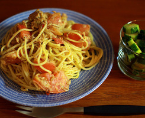

list1
- 
The omnipresent menu can´t be applied in many cases because of the screen size. The menu probably would have to be in a vertical way and it could be very uncomfortable if for every single page people would need to scroll down all the menu to see the content. So, only use omnipresent menu if your site has only three links or less on its top navigation and, because of that, it can be horizontal. The solution is to put the navigation on the first page and on the others pages use a link at the top to come back to the first page or use breadcrumbs.
ASP.NET、MVC、EF、NHibernate、SQL Server、Oracle、JavaScript、HTML5、CSS3、JQuery、Knockout、Silverlight、WPF、WCF、ADFS